Exploring MESA models#
Let’s look at the output from the MESA stellar evolution code for 3 different mass progenitors: 1, 8, and 15 \(M_\odot\). These models were all created using MESA Web a web-based interface to MESA for quick calculations.
To read in these files, we use py_mesa_reader
Tip
py_mesa_reader is available on PyPI, so it can be installed using pip as:
pip install mesa_reader
import numpy as np
import matplotlib.pyplot as plt
import mesa_reader as mr
MESA provides 2 types of output: profiles and a history. The profiles represent a snapshot of the start at one instance of time and give the stellar data as a function of radius or enclosed mass. The history provides some global quantities as a function of time throughout the entire evolution of the star. We’ll use both.
The model files are:
\(0.3 M_\odot\): M0.3_default_profile8.data; M0.3_default_trimmed_history.data
\(1 M_\odot\): M1_default_profile8.data; M1_default_profile218.data; M1_default_trimmed_history.data
\(8 M_\odot\): M8_basic_co_profile8.data; M8_basic_co_profile39.data; M8_basic_co_trimmed_history.data
\(15 M_\odot\): M15_aprox21_profile8.data; M15_aprox21_profile19.data; M15_aprox21_trimmed_history.data
To make the management easier, we’ll create a container for each model that holds the history and profiles, processed by py_mesa_reader
class Model:
def __init__(self, mass, profiles=None, history=None):
self.mass = mass
if history:
self.history = mr.MesaData(history)
self.profiles = []
if profiles:
for p in profiles:
self.profiles.append(mr.MesaData(p))
Now read in all the data. For each mass we have 2 profiles and 1 history. The profiles were picked to roughly correspond to the midpoint of core H burning and core He burning.
models = []
models.append(Model(0.3, profiles=["M0.3_default_profile8.data"],
history="M0.3_default_trimmed_history.data"))
models.append(Model(1, profiles=["M1_default_profile8.data",
"M1_default_profile218.data"],
history="M1_default_trimmed_history.data"))
models.append(Model(8, profiles=["M8_basic_co_profile8.data",
"M8_basic_co_profile39.data"],
history="M8_basic_co_trimmed_history.data"))
models.append(Model(15, profiles=["M15_aprox21_profile8.data",
"M15_aprox21_profile19.data"],
history="M15_aprox21_trimmed_history.data"))
---------------------------------------------------------------------------
FileNotFoundError Traceback (most recent call last)
Cell In[3], line 3
1 models = []
----> 3 models.append(Model(0.3, profiles=["M0.3_default_profile8.data"],
4 history="M0.3_default_trimmed_history.data"))
6 models.append(Model(1, profiles=["M1_default_profile8.data",
7 "M1_default_profile218.data"],
8 history="M1_default_trimmed_history.data"))
10 models.append(Model(8, profiles=["M8_basic_co_profile8.data",
11 "M8_basic_co_profile39.data"],
12 history="M8_basic_co_trimmed_history.data"))
Cell In[2], line 5, in Model.__init__(self, mass, profiles, history)
3 self.mass = mass
4 if history:
----> 5 self.history = mr.MesaData(history)
6 self.profiles = []
7 if profiles:
File /opt/hostedtoolcache/Python/3.13.7/x64/lib/python3.13/site-packages/mesa_reader/__init__.py:134, in MesaData.__init__(self, file_name, file_type)
132 self.header_data = None
133 self.header_names = None
--> 134 self.read_data()
File /opt/hostedtoolcache/Python/3.13.7/x64/lib/python3.13/site-packages/mesa_reader/__init__.py:183, in MesaData.read_data(self)
181 self.read_model_data()
182 elif self.file_type == "log":
--> 183 self.read_log_data()
184 else:
185 raise UnknownFileTypeError("Unknown file type {}".format(self.file_type))
File /opt/hostedtoolcache/Python/3.13.7/x64/lib/python3.13/site-packages/mesa_reader/__init__.py:199, in MesaData.read_log_data(self)
187 def read_log_data(self):
188 """Reads in or update data from the original log (.data or .log) file.
189
190 This re-reads the data from the originally-provided file name. Mostly
(...) 197 None
198 """
--> 199 self.bulk_data = np.genfromtxt(
200 self.file_name,
201 skip_header=MesaData.bulk_names_line - 1,
202 names=True,
203 ndmin=1, # Make sure a single entry is still a 1D array
204 dtype=None,
205 )
206 self.bulk_names = self.bulk_data.dtype.names
207 header_data = []
File /opt/hostedtoolcache/Python/3.13.7/x64/lib/python3.13/site-packages/numpy/lib/_npyio_impl.py:1991, in genfromtxt(fname, dtype, comments, delimiter, skip_header, skip_footer, converters, missing_values, filling_values, usecols, names, excludelist, deletechars, replace_space, autostrip, case_sensitive, defaultfmt, unpack, usemask, loose, invalid_raise, max_rows, encoding, ndmin, like)
1989 fname = os.fspath(fname)
1990 if isinstance(fname, str):
-> 1991 fid = np.lib._datasource.open(fname, 'rt', encoding=encoding)
1992 fid_ctx = contextlib.closing(fid)
1993 else:
File /opt/hostedtoolcache/Python/3.13.7/x64/lib/python3.13/site-packages/numpy/lib/_datasource.py:192, in open(path, mode, destpath, encoding, newline)
155 """
156 Open `path` with `mode` and return the file object.
157
(...) 188
189 """
191 ds = DataSource(destpath)
--> 192 return ds.open(path, mode, encoding=encoding, newline=newline)
File /opt/hostedtoolcache/Python/3.13.7/x64/lib/python3.13/site-packages/numpy/lib/_datasource.py:529, in DataSource.open(self, path, mode, encoding, newline)
526 return _file_openers[ext](found, mode=mode,
527 encoding=encoding, newline=newline)
528 else:
--> 529 raise FileNotFoundError(f"{path} not found.")
FileNotFoundError: M0.3_default_trimmed_history.data not found.
HR diagram#
Now we’ll make an HR diagram and label the points where \(H\) and \(He\) burning commences.
fig, ax = plt.subplots()
for star in models:
ax.loglog(star.history.Teff, star.history.L,
label=rf"{star.mass} $M_\odot$")
ax.legend()
ax.set_xlabel("T (K)")
ax.set_ylabel(r"L ($L_\odot$)")
ax.invert_xaxis()
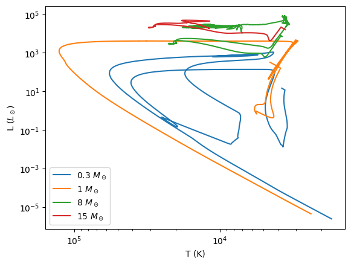
You can see the main sequence clearly on this plot.
We also see that only the 1 solar mass star “finished’ stellar evolution, winding up as a cooling white dwarf at the end – the path it is following is essentially a line of constant radius, since the white dwarf does not contract as it cools (it is degenerate).
Central evolution#
We want to plot the history of the evolution of the central conditions in the \(\log \rho\)-\(\log T\) plane.
We will plot the EOS boundary lines considered before. These functions are now in a module, regimes.py to make our life easier.
import regimes
Now we can plot the data
fig, ax = plt.subplots()
for star in models:
ax.loglog(star.history.center_T, star.history.center_Rho,
label=rf"{star.mass} $M_\odot$")
rho = np.logspace(-5, 8, 100)
ax.loglog(regimes.deg_ideal(rho, mu_e=1.3), rho, color="0.5", ls=":")
ax.loglog(regimes.rad_ideal(rho, mu=0.6), rho, color="0.5", ls=":")
ax.legend()
ax.set_xlabel(r"$T_c$ [K]")
ax.set_ylabel(r"$\rho_c$ [g/cc]")
ax.set_xlim(1.e5, 1.e9)
(100000.0, 1000000000.0)
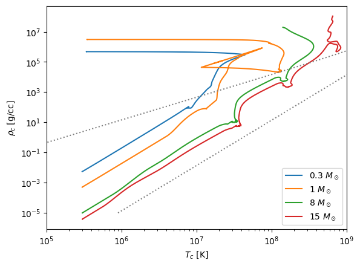
Some observations:
The higher mass stars are closer to the line where radiation dominates.
The 1 solar mass star makes a transition from following \(T \approx \rho^{1/3}\) to \(\rho = \mbox{constant}\) when degeneracy kicks in.
The other stars more or less follow the \(T \approx \rho^{1/3}\) trend expected from polytropes + ideal gas.
Main sequence lifetime#
We can estimate the main sequence lifetime just by looking for when the core H is all consumed.
fig, ax = plt.subplots()
for star in models:
ax.semilogx(star.history.star_age, star.history.center_h1, label=rf"{star.mass} $M_\odot$")
ax.legend()
ax.set_xlabel("t (yr)")
ax.set_ylabel("X[H1]")
ax.grid()
ax.set_xlim(1.e4, 2.e12)
(10000.0, 2000000000000.0)
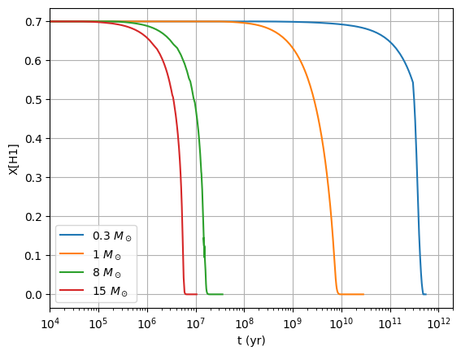
From this plot, we see that the main sequence lifetime of the 15 \(M_\odot\) star is \(\sim 6\times 10^6\) yr, for the 8 \(M_\odot\) star \(\sim 2\times 10^7\) yr, for the 1 \(M_\odot\) star \(\sim 9\times 10^9\) yr, and for the 0.3 \(M_\odot\) star \(\sim 4\times 10^{11}\) yr.
Profiles#
Let’s next look at the profiles of the stars in the \(\log \rho\)-\(\log T\) plane
First the 0.3 solar mass star
fig, ax = plt.subplots()
for p in models[0].profiles:
ax.plot(p.T, p.Rho, label=f"t = {p.star_age:10.3g} yr")
ax.loglog(regimes.deg_ideal(rho, mu_e=1.3), rho, color="0.5", ls=":")
ax.loglog(regimes.rad_ideal(rho, mu=0.6), rho, color="0.5", ls=":")
ax.legend()
ax.set_xlabel(r"$T(m)$ [K]")
ax.set_ylabel(r"$\rho(m)$ [g/cc]")
ax.set_xlim(1.e3, 1.e9)
(1000.0, 1000000000.0)
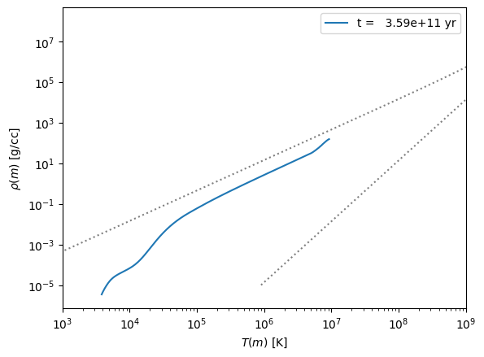
Next the 1 solar mass star
fig, ax = plt.subplots()
for p in models[1].profiles:
ax.plot(p.T, p.Rho, label=f"t = {p.star_age:10.3g} yr")
ax.loglog(regimes.deg_ideal(rho, mu_e=1.3), rho, color="0.5", ls=":")
ax.loglog(regimes.rad_ideal(rho, mu=0.6), rho, color="0.5", ls=":")
ax.legend()
ax.set_xlabel(r"$T(m)$ [K]")
ax.set_ylabel(r"$\rho(m)$ [g/cc]")
ax.set_xlim(1.e3, 1.e9)
(1000.0, 1000000000.0)
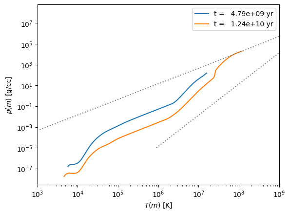
Now the 8 solar mass star
fig, ax = plt.subplots()
for p in models[2].profiles:
ax.plot(p.T, p.Rho, label=f"t = {p.star_age:10.3g} yr")
ax.loglog(regimes.deg_ideal(rho, mu_e=1.3), rho, color="0.5", ls=":")
ax.loglog(regimes.rad_ideal(rho, mu=0.6), rho, color="0.5", ls=":")
ax.legend()
ax.set_xlabel(r"$T(m)$ [K]")
ax.set_ylabel(r"$\rho(m)$ [g/cc]")
ax.set_xlim(1.e3, 1.e9)
(1000.0, 1000000000.0)
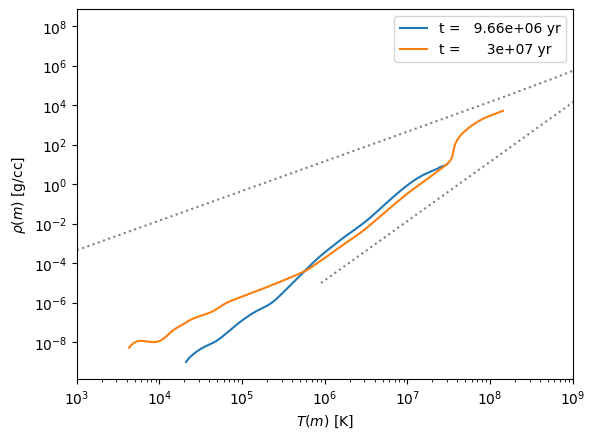
Finally the 15 solar mass star
fig, ax = plt.subplots()
for p in models[3].profiles:
ax.plot(p.T, p.Rho, label=f"t = {p.star_age:10.3g} yr")
ax.loglog(regimes.deg_ideal(rho, mu_e=1.3), rho, color="0.5", ls=":")
ax.loglog(regimes.rad_ideal(rho, mu=0.6), rho, color="0.5", ls=":")
ax.legend()
ax.set_xlabel(r"$T(m)$ [K]")
ax.set_ylabel(r"$\rho(m)$ [g/cc]")
ax.set_xlim(1.e3, 1.e9)
(1000.0, 1000000000.0)
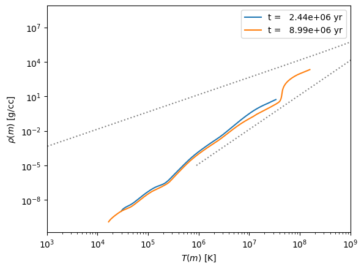
Eddington Standard Model#
The Eddington standard model works for a fully radiative star with a constant composition.
In class, we found that the temperature and density in the Eddington standard model were related by
We will assume that \(\mu\) is constant and take \(\mu\) and \(\beta\) from the center of the star.
# CGS constants
k_B = 1.38e-16
m_u = 1.66e-24
m_e = 9.11e-28
c = 3.e10
h = 6.63e-27
a = 5.67e-15
def get_beta(profile):
"""compute the raito of gas to total pressure"""
P_g = profile.Rho[0] * k_B * profile.T[0] / (profile.mu[0] * m_u)
beta = P_g / profile.pressure[0]
return beta
def eddington_T(rho, beta, mu, M):
return 4.62e6 * beta * mu * M**(2./3.) * rho**(1./3.)
Here’s our plotting function. We will plot the data from the MESA model and the line corresponding to the Eddington standard model. We will also mark those zones in the MESA model where \(\nabla > \nabla_\mathrm{ad}\) with red squares, to indicate that it is convective.
def make_plot(profile, beta, M):
fig, ax = plt.subplots()
ax.loglog(profile.Rho, profile.T)
# find where it is convective
idx = profile.gradT >= profile.grada
ax.scatter(profile.Rho[idx], profile.T[idx],
color="r", marker="s", alpha=0.5, linewidth=3)
ax.loglog(profile.Rho, eddington_T(profile.Rho, beta, profile.mu[0], M),
ls=":", label="Eddington standard model")
ax.legend()
ax.set_xlabel("rho [g/cc]")
ax.set_ylabel("T [K]")
ax.set_title(rf"M = {M} $M_\odot$; age = {profile.star_age} years")
for star in models:
M = star.mass
p = star.profiles[0]
beta = get_beta(p)
fig = make_plot(p, beta, M)
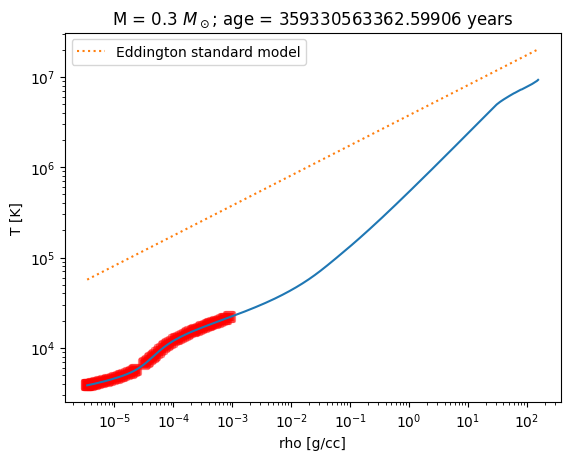
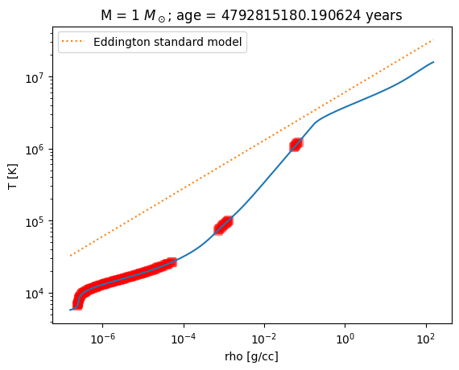
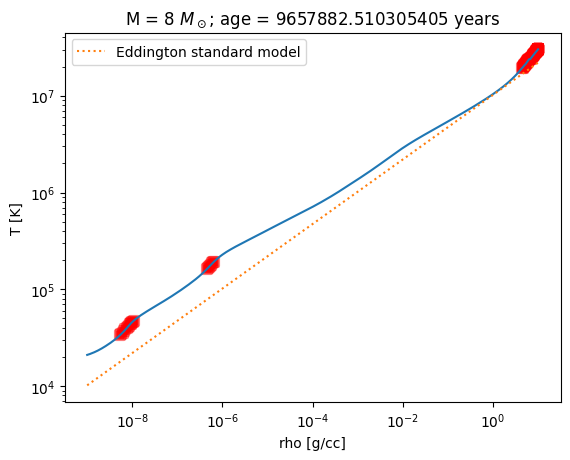
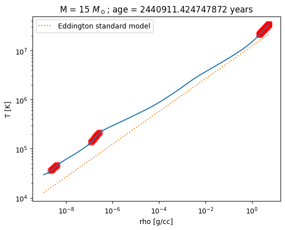
Convection#
We can look at where the models are convective by comparing \(\nabla\) and \(\nabla_\mathrm{ad}\).
First the H burning profiles
fig, ax = plt.subplots()
for star in models:
ax.plot(star.profiles[0].mass, star.profiles[0].gradT - star.profiles[0].grada,
label=rf"{star.mass} $M_\odot$")
ax.set_xlabel(r"enclosed mass ($M_\odot$)")
ax.set_ylabel(r"$\nabla - \nabla_\mathrm{ad}$")
ax.set_xscale("log")
ax.legend()
ax.grid(linestyle=":")
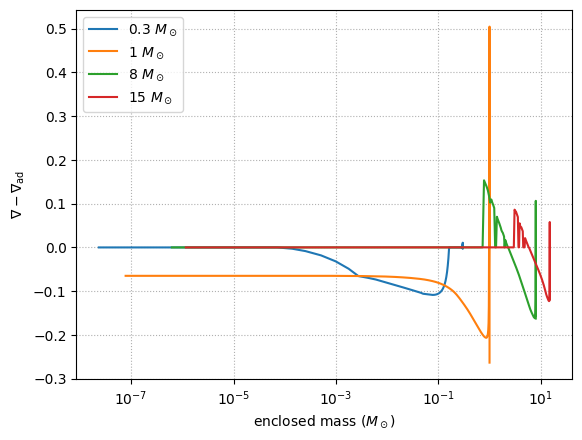
We see that the massive stars have convective cores \(\nabla \sim \nabla_\mathrm{ad}\), but the 1 solar mass star has a radiative core.
Let’s look at the same plot, but in terms of radius
fig, ax = plt.subplots()
for star in models:
ax.plot(star.profiles[0].radius, star.profiles[0].gradT - star.profiles[0].grada,
label=rf"{star.mass} $M_\odot$")
ax.set_xlabel(r"radius ($R_\odot$)")
ax.set_ylabel(r"$\nabla - \nabla_\mathrm{ad}$")
#ax.set_xscale("log")
ax.legend()
ax.grid(linestyle=":")
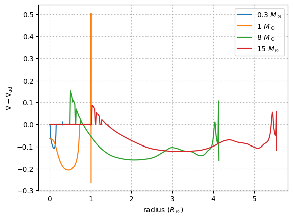
On this scale, we see that the Sun’s outer convective zone is ~ 1/3rd of its radius